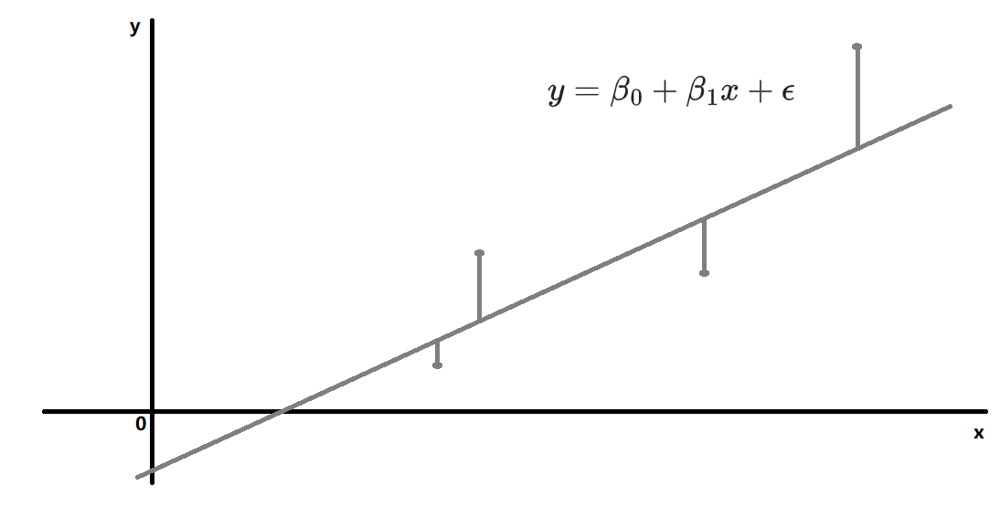

Basis Regression
- $y$
-
$y$ $x_1, x_2, x_3, ...$
-
- (Error)$\epsilon$
- (Deviation)$d_i = y_i - \overline{y}$
- (Residual)$e_i = y_i - \hat{y}$
-
- $SSE=\sum\limits_{i=1}^{n}w_i(y_i-\hat{y_i})^2$
- $MSE=SSE/n$
- $RMSE=\sqrt{MSE}$
- $RMS=\sqrt{\frac{\sum\limits^n_{i=1}{x_i}}{n}}$
-
n$\beta x^n$n
- k$x_i$
- $E(y)=\beta_0 + \beta_1x_1+ \beta_2x_2 + \beta_3x_1^2x_2$

- n
- $SS_{xy}=\sum\limits_{i=1}^{n}(x_i-\overline{x})(y_i-\overline{y})$
- $SS_{xx}=\sum\limits_{i=1}^{n}(x_i-\overline{x})^2$
- $SS_{yy}=\sum\limits_{i=1}^{n}(y_i-\overline{y})^2$
- $SSE=\sum\limits_{i=1}^{n}(y_i-\hat{y_i})^2=\sum\limits_{i=1}^{n}(y_i-(\hat\beta_0+\hat\beta_1x))^2$
- yx $y=\beta_0+\beta_1x+\epsilon$
- $\beta_0$, $\beta_1$ $\hat{y}=\hat\beta_0+\hat\beta_1x$
- $\epsilon$ $\sigma_{\epsilon} \approx s_{\epsilon}$
- $r$$r^2$$\beta_1$
$SSE$
- $\frac{\partial SSE}{\partial \hat{\beta_1}}=0$
- $\frac{\partial SSE}{\partial \hat{\beta_0}}=0$
$\beta_0$, $\beta_1$
- $\hat{\beta_1}=\frac{SS_{xy}}{SS_{xx}}$
- $\hat{\beta_0}=\overline{y}-\hat{\beta_1}\overline{x}$
$\epsilon$
- $\epsilon$ 0i.e.0
- $\epsilon$ $\sigma^2$
- $\epsilon$
- y$\epsilon$y$\epsilon$
363
- $\sigma^2$ $s^2=\frac{SSE}{df}=\frac{SSE}{n-2}$
- y $E(y)=\beta_0+\beta_1x $ $\sigma^2$
- $\hat\beta_0$, $\hat\beta_1$ 0 $\sigma^2_{\hat{\beta_0}}=\frac{\sigma^2}{n}\frac{\sum x^2_i}{SS_{xx}}$$\sigma^2_{\hat{\beta_1}}=\frac{\sigma^2}{SS_{xx}}$
| $\hat\theta$ | $\sigma_{\hat\theta}$ | $H_0$ | $(1-\alpha)$ | |
|---|---|---|---|---|
| $\hat\beta_1$ | $\sigma_{\hat{\beta_1}}=\sqrt\frac{\sigma^2}{SS_{xx}}\approx\frac{s}{\sqrt{SS_{xx}}}=s_{\hat{\beta_1}}$ | $\beta_1=0$xy | $T=\frac{\hat\beta_1 -0}{s_{\hat{\beta_1}}}$ | $\hat\beta_1 \pm t_{\alpha/2}s_{\hat\beta_1}$ |
| $r$ | -- | $r=0$xy$\beta_1=0$ | $T=\frac{r\sqrt{n-2}}{\sqrt{1-r^2}}$ | -- |
- Pearson $r=\frac{SS_{xy}}{\sqrt{ SS_{xx}SS_{yy} }}=\hat{\beta_1}\sqrt{SS_{xx}/SS{yy}}$ xy$\hat{\beta_1}$
- $r^2=\frac{SSR}{SST}=\frac{SS_{yy}-SSE}{SS_{yy}}=1-\frac{SSE}{SS_{yy}}$$r^2=0.6$60%Variance
(p633) $\epsilon$
Spearman
- XY
- Spearman $r_s = 1- \frac{6\sum d_i^2}{n(n^2-1)}$i$d_i = (x_i-y_i)$
- $H0: \rho=0$
- $Ha: \rho>0$$r_s > r_{\alpha}$
- $Ha: \rho<0$$r_s < -r_{\alpha}$
- $Ha: \rho \neq 0$$|r_s| > r_{\alpha/2}$
- X $(x_i,y_i)$
- $y_i$$j>i$(i.e.yiyj)$(y_j-y_i)<0$$(y_j-y_i)>0$
- $C = - $
- $\epsilon$
- $H_a: \beta_1>0$p = $P(x \ge C)$
- $H_a: \beta_1<0$p = $P(x \le C)$
- $H_a: \beta_1 \neq 0$p = $2*min(P(x \ge C),P(x \le C))$

x$x=x_p$yE(y)
| $E(y)$$\hat{y}$ | $(1-\alpha)$ |
|---|---|
| $\sigma_{\hat{y}}=\sigma\sqrt{\frac{1}{n}+\frac{(x_p-\overline{x})^2}{SS_{xx}}} \approx s_{\hat{y}}=s\sqrt{\frac{1}{n}+\frac{(x_p-\overline{x})^2}{SS_{xx}}}$ | $\hat{y} \pm t_{\alpha/2}s_{\hat{y}}$ |
x$x=x_p$y$\hat{y}$
| $(y-\hat{y})$ | $(1-\alpha)$ |
|---|---|
| $\sigma_{(y-\hat{y})}=\sigma\sqrt{1+\frac{1}{n}+\frac{(x_p-\overline{x})^2}{SS_{xx}}} \approx s_{(y-\hat{y})}=s\sqrt{1+\frac{1}{n}+\frac{(x_p-\overline{x})^2}{SS_{xx}}}$ | $\hat{y} \pm t_{\alpha/2}s_{(y-\hat{y})}$ |
$\sigma$ $\epsilon$
- yx...(e.g. $\beta$)
- $y=\beta_0+\beta_1x_1+\beta_2x_2+...+\beta_kx_k+\epsilon$ $y=\beta_0+\beta_1x_1x_2+\beta_2x_2^2+...+\beta_kx_k^k+\epsilon$
- $\beta_0,\beta_1,...,\beta_k$
- $\epsilon$ $\sigma_{\epsilon} \approx s_{\epsilon}$
$SSE$
- $\frac{\partial SSE}{\partial \hat{\beta_1}}=0$
- $\frac{\partial SSE}{\partial \hat{\beta_0}}=0$
- ....
$Y=XB+E$
$ \begin{bmatrix} y_1 \\ y_2 \\ y_3 \\ ... \\ y_n \end{bmatrix} = \begin{bmatrix} 1 & x_{11} & x_{12} & ... & x_{1k} \\ 1 & x_{21} & x_{22} & ... & x_{2k} \\ ... \\ 1 & x_{n1} & x_{n2} & ... & x_{nk} \end{bmatrix} \begin{bmatrix} \hat\beta_0 \\ \hat\beta_1 \\ ... \\ \hat\beta_k \end{bmatrix} + \begin{bmatrix} \epsilon_1 \\ \epsilon_2 \\ \epsilon_3 \\ ... \\ \epsilon_n \end{bmatrix} $
$(X'X)\hat{B}=X'Y$
$\hat{B}=(X'X)^{-1}X'Y$
$\epsilon$ $SSE=Y'Y-\hat{B}'X'Y'$$\epsilon$ $s=\frac{SSE}{n-\beta}$
$ (X'X)^{-1} = \begin{bmatrix} c_{00} & c_{01} & c_{02} & ... & c_{0k} \\ c_{10} & c_{11} & c_{12} & ... & c_{1k} \\ c_{20} & c_{21} & c_{22} & ... & c_{2k} \\ ... \\ c_{k0} & c_{k1} & c_{k2} & ... & c_{kk} \end{bmatrix} $
$\hat\beta_i$$E(\hat\beta_i)=\beta_i$$\sigma_{\hat\beta_i}=\sigma\sqrt{c_{ii}}$$Cov(\hat\beta_i,\hat\beta_j)=c_{ij}\sigma^2$
| $\hat\theta$ | $\sigma_{\hat\theta}$ | $H_0$ | $(1-\alpha)$ | -- | |
|---|---|---|---|---|---|
| $\hat\beta_i$ | $\sigma_{\hat\beta_i}=\sigma\sqrt{c_{ii}}$ $\approx s_{\hat\beta_i}=s\sqrt{c_{ii}}$ |
$\beta_i=0$ | $T=\frac{\hat\beta_i}{s_{\hat\beta_i}}$ | $\hat\beta_i \pm t_{\alpha/2}s_{\hat\beta_i}$ | |
| $R^2$ | -- | $R^2=0$$\beta_1=..=\beta_k=0$ | $F=\frac{MS_{Model}}{MSE}$ $=\frac{(SS_{yy}-SSE)/k}{SSE/(n-k-1)}$ $=\frac{R^2/k}{(1-R^2)/[n-(k+1)]}$ |
$F > F_{\alpha}$ |
- $R^2=1-\frac{SSE}{SS_{yy}}$ $r^2$
- $R_a^2 = 1- \frac{(n-1)}{n-(k+1)}(\frac{SSE}{SS_{yy}})= 1- \frac{(n-1)}{n-(k+1)}(1-R^2)$
$(y,a)$$a=[1,x_1,x_2,...,x_k]$ $\hat{y}=\hat\beta_0+\hat\beta_1x_1+...+\hat\beta_kx_k$
E(y)
| $E(y)$$\hat{y}$ | $(1-\alpha)$ |
|---|---|
| $\sigma_{\hat{y}}\approx s_{\hat{y}}=s\sqrt{a'(X'X)^{-1}a}$ | $\hat{y} \pm t_{\alpha/2}s_{\hat{y}}$ |
y$\hat{y}$
| $(y-\hat{y})$ | $(1-\alpha)$ |
|---|---|
| $\sigma_{y-\hat{y}}\approx s_{y-\hat{y}}=s\sqrt{1+a'(X'X)^{-1}a}$ | $\hat{y} \pm t_{\alpha/2}s_{(y-\hat{y})}$ |
$\sigmas$ $\epsilon$
Tips
- F
- $x_k=p$ $y$ $E(y)=\beta_0+\beta_1x_1x_2+\beta_2x_2^2+...+\beta_kx_k^k$ $x_k$ $x_k=p$ $\frac{dE(y)}{dx_k}$ $x_k=p$
- 463 $e_i = y_i - \hat{y}$ $\hat{y}$ ($y$)$y$
- $y$ $y^{\ast}=\sqrt{y}$
- $y$ $y^{\ast}=sin^{-1}\sqrt{y}$
- $y$ $y^{\ast}=ln(y)$
- $3s$
- $\epsilon$
- $x$ $\beta_{0,1,2,..k}$1 $\ge (k+1)$
- $y$
- $\beta$t$\beta$t
- 467-
-
$Normalize(x)$
-
(Validation) $\hat{y}$$R^2_{pred}, MSE_{pred}$ 505
- $i$ $\hat{y_{(i)}}$ $\hat{y}$$R^2_{jackknife}, MSE_{jackknife}$
- 506$\beta_i$TF$\beta_i$$\beta_i$
- 0/1486
- $k(A,B,C,...)$$E(y)=\beta_0+\beta_1x_1+...+\beta_{k-1}x_{k-1}$
- $ x_i= \begin{cases} 1 \quad i \\ 0 \quad Otherwise \end{cases} $$x_{1...(k-1)}$=0k$\beta_0$Z
- 492($\beta_1x_1+\beta_2x_2$)($\beta_3x_1x_2+\beta_4x_2x_3$)
- F
- $E(y)=\beta_0+\beta_1x_1+...+\beta_gx_g$
- $E(y)=\beta_0+\beta_1x_1+...+\beta_gx_g+\beta_{g+1}x_{g+1}+...+\beta_{k}x_{k}$
- $H_0$II
- F$R_a^2,s$
- $\beta_1=...=\beta_i=0$ $\mu_1=...=\mu_i$ y
- : Basis
- yx/y(e.g.)

-
(ANOVA)$F=\frac{}{}=\frac{SST/df_{SST}}{SSE/df_{SSE}}$
-
ANOVA(p595)
- (Bartlett)(Levene, F=MST/MSE)
- (p589)
- Planned
- Post-hoc teste.g.A=B=C=D
- I$\alpha$ppq
| k Multiple test | / | |
|---|---|---|
| LSD | T$S_p^2=\frac{\sum\limits_{i=1}^k(n_i-1)S_i^2}{\sum\limits_{i=1}^k(n_i-1)}$ | k |
| Sidak | LSD$$\alpha_{adj}=1-(1-\alpha)^{1/k}$$ $$p_{adj}=1-(1-p)^{1/k}$$ | k |
| Bonferroni | LSD$$\alpha_{adj}=\alpha/k$$ | k |
| Dunnett | LSD | v.s 1 |
| Tukey's HSD | $q=\frac{(\overline{Y_{max}}-\overline{Y_{min}})}{\sqrt{S_p^2/n}}$$S_p^2$$q_{\alpha}(k,df)$ | |
| SNK Q | Tukey/ | |
| Duncan | SNKSSR | SNK |
| Tamhane T2 | -- | |
| Games-Howell | -- | |
| Scheffe | -- | 1v1 v.s 1 |
| -- | $(\sigma,\mu)$ | type I error type II error |
$$ E(y)=\beta_0+\beta_1x_1+...+\beta_{p-1}x_{p-1} \text{ } x_i= \begin{cases} 1 \quad i \\ 0 \quad Otherwise \end{cases} $$
| F | pr $n=rp$ | |
|---|---|---|
| H0=(p-1) | $F=\frac{(SSE_R-SSE_C)/(p-1)}{SSE_C/df_C}$ | |
| -- | -- | $df_C=(n-1)-(p-1)=n-p$ |
| ANOVA | -- | pr $n=rp$ |
|---|---|---|
| $CM$ | $CM=\frac{()^2}{}=\frac{(\sum{y_i})^2}{n}$ | |
| $SS_{}$ | $SS_{}=()-CM=\sum{y_i}^2-CM$ | |
| $SST$ | $SST=\sum{\frac{(T_p)^2}{n_p}}-CM$$T_p$p$n_p=b$p |
| ANOVA | df | SS | MS=SS/df | F=MS/MSE |
|---|---|---|---|---|
| $(p-1)$ | $SST$ | $MST=\frac{SST}{p-1}$ | $F=\frac{MST}{MSE}$ | |
| $(n-p)$ | $SSE=SS_{}-SST$ | $MSE=\frac{SSE}{n-p}$ | -- | |
| $(n-1)$ | $SS_{}$ | -- | -- |
p $\times$ b
$$ E(y)=\beta_0+\beta_1x_1+...+\beta_{p-1}x_{p-1}+...+\beta_{p+b-2}x_{p+b-2} \text{ }$$ $$ \text{ } x_{i \in [1,p-1]}= \begin{cases} 1 \quad i \\ 0 \quad Otherwise \end{cases} \text{ } x_{j \in [p,p+b-2]}= \begin{cases} 1 \quad j \\ 0 \quad Otherwise \end{cases} $$
| F | p $\times$ b() $n=bp$ | |
|---|---|---|
| H0=(p-1)(b-1) | $F=\frac{(SSE_R-SSE_C)/(p-1)}{SSE_C/df_C}$ | |
| H0=(b-1)(p-1) | $F=\frac{(SSE_R-SSE_C)/(b-1)}{SSE_C/df_C}$ | |
| -- | -- | $df_C=(n-1)-(p-1)-(b-1)=n-p-b+1$ |
| ANOVA | -- | p $\times$ b() $n=bp$ |
|---|---|---|
| $CM$ | $CM=\frac{()^2}{}=\frac{(\sum{y_i})^2}{n}$ | |
| $SS_{}$ | $SS_{}=()-CM=\sum{y_i}^2-CM$ | |
| $SST$ | $SST=\sum{\frac{(T_p)^2}{n_p}}-CM$$T_p$p$n_p=b$p | |
| $SSB$ | $SSB=\sum{\frac{(B_b)^2}{n_b}}-CM$$B_b$b$n_b=p$b |
| ANOVA | df | SS | MS=SS/df | F=MS/MSE |
|---|---|---|---|---|
| $(p-1)$ | $SST$ | $MST=\frac{SST}{p-1}$ | $F=\frac{MST}{MSE}$ | |
| $(b-1)$ | $SSB$ | $MSB=\frac{SSB}{b-1}$ | $F=\frac{MSB}{MSE}$ | |
| $(n-p-b+1)$ | $SSE=SS_{}-SST-SSB$ | $MSE=\frac{SSE}{n-p-b+1}$ | -- | |
| $(n-1)$ | $SS_{}$ | -- | -- |
$$ E(y)=\beta_0+\beta_1x_1+...+\beta_{d}x_{1}x_{3}+...+\beta_{e}x_{1}x_{3}x_{4} \text{ }$$ $$ \text{ } x_{i}= \begin{cases} 1 \quad Xi \\ 0 \quad Otherwise \end{cases} \text{ } x_{j}= \begin{cases} 1 \quad j \\ 0 \quad Otherwise \end{cases} $$
A(a-1)b(b-1)c(c-1)AB(a-1)$\times$(b-1),ABC(a-1)$\times$(b-1)$\times$(c-1)k=(abc-1)$x$
ANOVA
| ANOVA | -- | $a \times b$ r $n=abr$ |
|---|---|---|
| $CM$ | $CM=\frac{()^2}{}=\frac{(\sum{y_i})^2}{n}$ | |
| $SS_{}$ | $SS_{}=()-CM=\sum{y_i}^2-CM$ | |
| $SS_A$ | A | $SS_A=\sum{\frac{(A_i)^2}{n_i}}-CM$$A_i$A i$n_i=br$ A i |
| $SS_{AB}$ | AB | $SS_{AB}=\frac{\sum\sum (A_iB_j)^2}{r}-SS_A-SS_B-CM$ |
| $SSE$ | $SSE=SS_{}-SS_A-SS_B-SS_{AB}$ |
| Two-way ANOVA | df | SS | MS=SS/df | F=MS/MSE |
|---|---|---|---|---|
| A | $(a-1)$ | $SS_A$ | $MS_A$ | |
| B | $(b-1)$ | $SS_B$ | $MS_B$ | |
| AB | $(a-1)(b-1)$ | $SS_{AB}$ | $MS_{AB}$ | |
| $ab(r-1)$ | $SSE$ | $MSE$ | -- | |
| $abr-1$ | $SS_{}$ | -- | -- |
ANOVAminitab
ANOVA
ANOVAp573
| ANOVA | df | SS | MS=SS/df | F=MS/MSE |
|---|---|---|---|---|
| A | $(a-1)$ | $SS_A$ | $MS_A$ | |
| AB | $(a-1)(b-1)$ | ? | ||
| ABC | $(a-1)(b-1)(c-1)$ | ? | ||
| $abc(r-1)$ | $SSE$ | $MSE$ | -- | |
| $abcr-1$ | $SS_{}$ | -- | -- |
580

$n_1$Rank1(A,B,...)AB...$n_2$/ Rank2Rank2$n_3$/ Rank3...
$y_{ij}$ij
$$E(y_{ij})=\mu+=\mu+E(\alpha_i)+E(\epsilon_{ij})=\mu+0+0=\mu$$
| ANOVA | -- | -- |
|---|---|---|
| $CM$ | $CM=\frac{()^2}{}=\frac{(\sum\sum{y_{ij}})^2}{n}$ | |
| $SS_{}$ | $SS_{}=()-CM=\sum\sum{y_{ij}}^2-CM$ | |
| $SS(A)$ | -- | $SS(A)=\sum\limits^{n_1}\frac{(A_i)^2}{n_2}-CM$ |
| $SS(B_{\in A})$ | -- | $SS(B_{\in A})=SS_{}-SS(A)$ |
| ANOVA | df | SS | MS=SS/df | E(MS) | F |
|---|---|---|---|---|---|
| A | $(n_1-1)$ | $SS(A)$ | $MS(A)$ | $V(\epsilon_{ij})+n_2V(\alpha_i)$ | $MS(A)/MS(B_{\in A})$ |
| B in A | $n_1(n_2-1)$ | $SS(B_{\in A})$ | $MS(B_{\in A})$ | $V(\epsilon_{ij})$ | -- |
| $n_1n_2-1$ | $SS_{}$ | -- | -- | -- |
$y_{ijk}$ijk
$$E(y_{ijk})=\mu+=\mu+E(\alpha_i)+E(\gamma_{ij})+E(\epsilon_{ijk})=\mu+0+0+0=\mu$$
| ANOVA | -- | -- |
|---|---|---|
| $CM$ | $CM=\frac{()^2}{}=\frac{(\sum\sum\sum{y_{ijk}})^2}{n}$ | |
| $SS_{}$ | $SS_{}=()-CM=\sum\sum\sum{y_{ijk}}^2-CM$ | |
| $SS(A)$ | -- | $SS(A)=\sum\limits^{n_1}\frac{(A_i)^2}{n_2n_3}-CM$ |
| $SS(B_{\in A})$ | -- | $SS(B_{\in A})=\sum\limits^{i=n_1}\sum\limits^{j=n_2}\frac{B^2_{ij}}{n_3}-SS(A)-CM$ |
| $SS(C_{\in B})$ | -- | $SS(C_{\in B})=SS_{}-SS(A)-SS(B_{\in A})$ |
| ANOVA | df | SS | MS=SS/df | E(MS) | F |
|---|---|---|---|---|---|
| A | $(n_1-1)$ | $SS(A)$ | $MS(A)$ | $V(\epsilon_{ijk})+n_3V(\gamma_{ij})+n_2n_3V(\alpha_i)$ | $MS(A)/MS(B_{\in A})$ |
| B in A | $n_1(n_2-1)$ | $SS(B_{\in A})$ | $MS(B_{\in A})$ | $V(\epsilon_{ijk})+n_3V(\gamma_{ij})$ | $MS(B_{\in A})/MS(C_{\in B})$ |
| C in B | $n_1n_2(n_3-1)$ | $SS(C_{\in B})$ | $MS(C_{\in B})$ | $V(\epsilon_{ijk})$ | -- |
| $n_1n_2n_3-1$ | $SS_{}$ | -- | -- | -- |